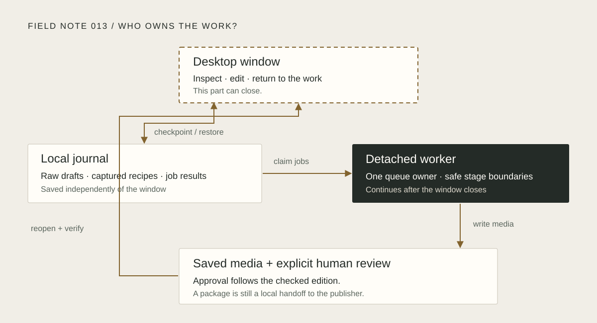

An episode is rendering. You close its window. What should happen when you open it again?
That question became a useful test for our podcast experiment. We already had the pieces: written Field Notes, narration, music, retimed captions and a video renderer. They could produce an episode. A person still had to remember which command came next, which folder held the result and which version they had actually checked.
We wanted a small workbench for that journey. Somewhere to change the sound, inspect the consequences, let the machine work and come back with enough context to continue.
A familiar material
We used Tkinter. The production engine was already Python, and an earlier robot workbench had given us useful experience with Tk: themed sections, background work and a queue that hands results back to the interface.
That made it a reasonable material for this experiment. The studio could live beside the existing engine in Ubuntu or WSL, with ordinary desktop controls and no separate web service to operate. We kept the production engine behind an adapter so that the interface could change without taking ownership of everything underneath it.
The first useful shape was three stages: Produce, Review and Release. Each stage needed a clear answer to a different question. What will change? What have I checked? What is ready to take to the publisher?
Give the job a life of its own
The important decision was where the work should live.
The window holds an editable view. A local journal keeps drafts, queued recipes and job results. A separate worker owns production. Closing the window leaves that worker and its queue in place.


Suppose an episode is queued at 1.15 times the original pace. Changing the control afterwards should affect the next plan. The job already in the queue keeps the recipe that was inspected.
Unfinished edits have a different need. Half a date or an empty numeric field is perfectly ordinary while someone is typing. We preserve that raw text as a draft and validate it when the person asks to use it. Returning to the work should not require reconstructing a thought that happened to be incomplete.
A restart can also leave an uncertain result. In that case the journal says interrupted. There is a saved record to inspect and an explicit retry. Guessing that a job succeeded would make the interface easier to colour green and harder to trust.
Let the labels earn their confidence
A saved video, a checked video and a published video are different events.
Review therefore belongs to the saved edition. Listen to it, check its captions, watch the full video where appropriate, and record the confirmations. If the media changes, the earlier approval cannot quietly move across to it. Reopening the window restores the workspace; the review checkboxes need attention again.
Release makes the handoff tangible. It lists the actual video, thumbnail, subtitle files, audio and transcript, with their sizes. Upload copy comes from the checked package when one exists. There is a route to open a file, a folder or YouTube Studio, and a Windows-compatible upload path when the tool is running in WSL.
“Ready for manual upload” describes those local checks. The person still uploads the package and records the real publication details. A local success message cannot establish what happened in another service.
A small window exposes a large assumption
The design acquired the studio’s paper, ink and brass, labelled pictograms and visible feedback. The more revealing work was making it fit.
One desktop test run passed while its screenshots showed an awkward result: the publishing buttons were visible, but the editable fields had been squeezed away at the minimum window size. The batch checklist had the same problem. We had checked that the actions existed without checking that the material they acted on remained usable.
We shortened the guidance, removed competing folder actions from those focused panels and made the checks cover the fields and choices themselves. The screenshot was evidence about a question the earlier assertions had missed.
A second window exposes another boundary worth making explicit. Two copies of the interface can hold different drafts of one episode. A newer checkpoint needs an identity, and the other window needs a chance to resolve that conflict while keeping its edits. “Saved” should mean that this version was saved.
Enough to use, with a next question
By the end of the first complete pass, the studio had durable drafts, sound controls, editable publishing copy, batch inspection and worker health. Its verification included 86 tests, with 31 exercising real Tk controls. A separate production run finished all 13 existing recordings, checked their retimed captions and rendered short video previews and thumbnails. A repeat run checked cache reuse.
Those are useful boundaries for the result. They establish considerably more than a promising mockup. They do not replace listening to the finished episodes or completing the browser upload.
The next question is close at hand: can this workbench help us release its own Field Note without someone keeping the terminal sequence in their head?
There is still a gap at the beginning. Studio starts from prepared recordings. A new written note needs a narration script, a deliberate generation step and captions before it reaches that shelf. That handoff deserves the same care as the final upload: visible prerequisites, an inspectable plan and a clear account of any service being used.
For now, the experiment has become a usable local tool for the episodes we already have. The next specimen is this note.